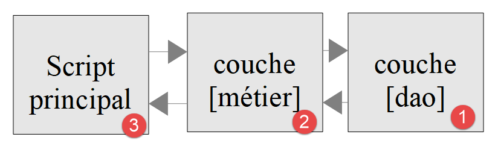

10. Layered Applications
10.1. Introduction
The scripts for this chapter are in the [scripts-console/troiscouches] folder:
We will now explore how to structure a PHP application in layers:

In this diagram, the left layer initiates the use of the right layer. The roles of the layers are as follows:
- [1]: The layer called [dao] (Data Access Objects) handles interactions with external data stores [4] (files, databases, web services, etc.). This layer is sometimes referred to as [DAL] (Data Access Layer), a term that better describes its role. This layer can read data from [3] or write data to [2]. It is called by the [métier] [6] layer and returns results to it in [7] format;
- [5]: a layer called [métier] that brings together “business” procedures and is supplied with all the data they need. This is generally the most stable layer in a project because it does not depend on how the data is acquired. The data comes from two sources:
- [9]: data provided by the PHP script;
- [6, 7]: data requested from the [dao] layer;
- [8]: the main script acts as the orchestrator. In a console application, it will:
- create the layers [métier] and [dao];
- execute the application’s algorithm. This algorithm functions like an orchestrator: it contains no “business logic” or data access code. The main script simply calls the procedures in layers [métier] and [9]. It completely ignores the [dao] layer and external data. It can provide the [métier] layer with [9] data. In a console application, this data may come from configuration files or from the script user. It receives [10] results from the [métier] layer. It may need to store certain results: to do so, it again uses the procedures of the [métier] layer, which in turn will call upon the [dao] layer to perform the task;
- Among the results, the main script may receive exceptions. It is the main script’s role to handle exceptions that are propagated up from all layers.
This layered architecture is designed to facilitate the application’s evolution. To achieve this, each layer implements an interface. Suppose that:
- the [dao] layer is implemented by a class [Dao], which implements an interface [IDao];
- the [métier] layer is implemented by a class [Metier], which implements an interface [IMetier].
The procedures in layer [métier] will then use interface [IDao] instead of class [Dao]. This allows the [dao] layer to be updated without affecting the [métier] layer. Suppose that in version 1, the [Dao1] layer uses data from a database. Following an update, this data is now provided by a web service in version 2, [Dao2]. We will ensure that both classes, [Dao1] and [Dao2], implement the same interface, [IDao], and that they throw the same exceptions. If this is verified, the [Metier] layer, which works with the [IDao] interface, will remain unchanged.
The same reasoning applies to the [métier] layer.
The application will implement the following layered structure:

10.2. Objects Exchanged Between Layers
Normally, layers exchange various objects. Here, they will exchange objects of the following [Personne] class: [Personne.php]:
Comments
- line 6: Objects exchanged between layers contain only data. They are made into immutable objects (class [readonly]): this prevents a layer from inadvertently modifying an object it received from another layer;
- line 9: The person has only one attribute, their identifier [$id], initialized by the constructor through parameter promotion. We will assume that this identifier refers to a unique person in a data warehouse;
- Lines 14–17: The method [__toString], which displays the person’s identifier.
10.3. [dao] Layer
The [IDao] interface implemented by the [dao] layer is as follows: [IDao.php]:
This interface is implemented by the following [Dao1] class: [Dao1.php]:
Comments
- Line 5: The class [Dao1] implements the interface [IDao]. It is declared as [final]: it is not intended to be derived from;
- the class does not interact with a data warehouse. It simply displays messages to track the code’s execution (line 11, line 18);
- line 8: the attribute [#[\Override]] indicates that the method implements a method of the interface. If the method name is incorrect, PHP signals this;
- line 19: We do indeed return a person with the ID passed as a parameter to the method.
We also implement the [IDao] interface with the following [Dao2] class, [Dao2.php]:
The [Dao2] class is similar to the [Dao1] class, except that we have modified the messages displayed.
10.4. Layer [métier]
Layer [métier] provides the following [IMetier] interface: [IMetier.php]:
Comments
- Line 6: The [IMetier] interface extends the [IDao] interface. This is not required at all. We’re doing this here because the example is simple: the [métier] layer provides the main script with the [get] and [save] methods from the [dao] layer, which it hides from the main script;
- Line 9: The method [doSomething] is specific to the [métier] layer.
Course PHP 7 referred to the interface [IMétier] and the class [Métier], with an accent. PHP allows accented letters in identifiers, but a file named [Métier.php] causes problems with certain tools (ZIP archives, file systems, automatic class loading). We now stick to class and file names without accents.
The [IMetier] interface is implemented by the following class: [Metier] [Metier.php]:
Comments
- Line 8: The [métier] layer must have a reference to the [dao] layer in order to use the latter’s methods. This reference is passed to it via its constructor and stored in the private, read-only attribute [$dao] (parameter promotion). Note that the parameter type is the [IDao] interface. Thus, the [métier] layer will be able to work with any class that implements the [IDao] interface. If we switch from a [Dao1] layer to a [Dao2] layer, and both implement the [IDao] interface, the [métier] layer does not need to be rewritten;
- this technique is called constructor-based dependency injection: the class [Metier] does not create the layer [dao] on which it depends; instead, it is provided to it. Course PHP 7 used a setter [setDao]. Constructor injection is now the norm: a [Metier] object cannot exist without its [dao] layer, and this layer cannot be changed afterward ([readonly] attribute). This is also the approach taken by frameworks such as Symfony or Laravel;
- lines 14–18: implementation of [IMetier::doSomething];
- lines 22–27: implementation of [IMetier::save]. This method must save a person to a data warehouse. The [métier] layer cannot do this. It calls upon the [dao] layer to perform this save (line 26);
- lines 31–36: implementation of [IMetier::get]. This method must retrieve from a data warehouse the person whose ID is passed to it as a parameter. The [métier] layer cannot do this. It calls on the [dao] layer to perform the task (line 35).
Conclusion: Whenever the [métier] layer needs to access data stored in the data warehouse, it must go through the [dao] layer, which was created specifically to access that data.
10.5. Main Script
We will write two orchestration scripts for this application. The first, [main1.php], will use the [Dao1] layer, while the second, [main2.php], will use the [Dao2] layer. We want to show that this has no impact on the code in the [Metier] layer.
The [main1.php] script is as follows:
Comments
- The [main1.php] script acts as the application's orchestrator. It loads the class and interface files (lines 7–11), creates the application’s layered structure (line 14), and then communicates with the [métier] layer (lines 16–18);
- line 14: it is here, and only here, that the implementation of the [dao] layer is selected;
- According to the layered structure diagram, the [main1.php] script must communicate only with the [métier] layer. It must not communicate with the [dao] layer, even though this is theoretically possible.
The results of the execution are as follows:
Comments
- Line 16 of the code caused lines 2 and 3 of the results to be written;
- Line 17 of the code caused line 4 of the results to be written;
- Line 18 of the code caused lines 5 and 6 of the results to be written.
The script [main2.php] is as follows:
Comments
- Lines 10 and 14: The layer structure now uses the [Dao2] layer. These are the only differences from [main1.php].
The results of the execution are as follows:
The [Dao1] layer simulates access to a local database, while the [Dao2] layer simulates access to a remote database. As long as these two layers conform to the [IDao] interface, we can see that the code for the [Metier] layer did not need to be changed.
We’ll apply what we’ve just learned to the tax calculation exercise that serves as our guiding example.